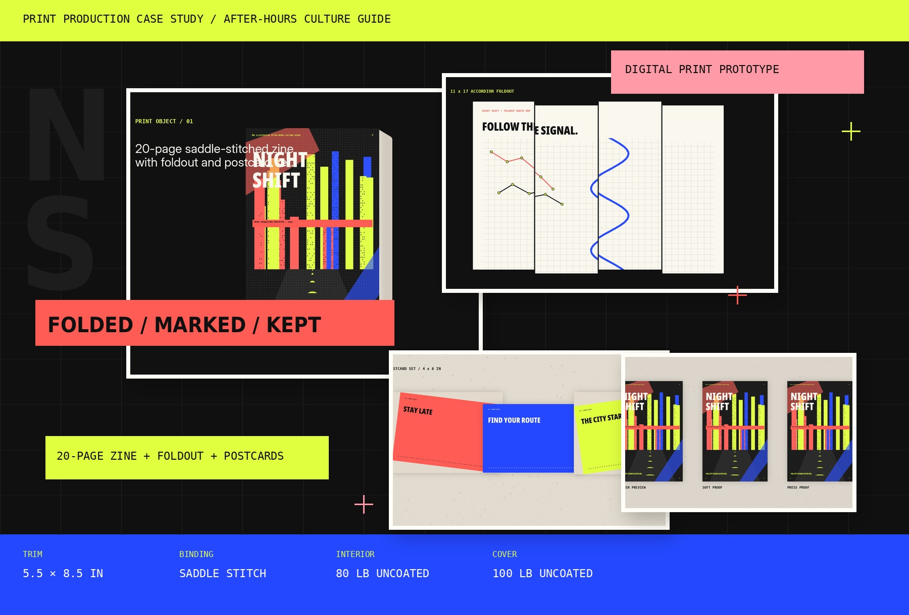

Editorial object
Twenty varied pages combine essays, data, profiles, listings, photo-led pacing, route planning, and production notes.
Self-directed concept · Print production & visual communication
A fluorescent after-hours culture guide designed as a complete print-object system: a 20-page saddle-stitched zine, accordion-fold map, postcard set, campaign language, proof workflow, and prepress dossier. The case study now opens with a full project board before moving into the detailed sections.
Night Shift is a production-ready prototype for a fictional guide. The files and rendered mockups demonstrate design and print-planning decisions, but the artifact has not yet been physically printed. Real proof photographs should be added after ordering a short run.

Design the object, not only the page
Night Shift imagines a guide to independent cultural spaces that become active after ordinary business hours. The design needed to feel immediate enough to pull from a counter, small enough to carry, and useful enough to keep.
Twenty varied pages combine essays, data, profiles, listings, photo-led pacing, route planning, and production notes.
A foldout route map, poster back, postcard set, and belly band extend the identity beyond the bound zine.
Trim, bleed, creep, paper, binding, proofing, imposition, color, export, and final quality control are documented.
Fluorescent signals, oversized type, halftone image treatment, and strict page furniture create energy without losing structure.
Important distinction: the current images are rendered production mockups, not photographs of a completed print run. The project becomes materially stronger once one short-run proof is printed and photographed under real light.
Everything in one place
This board presents the entire Night Shift system at a glance: the printed object, selected zine pages, foldout map, postcard set, visual language, production specifications, proof workflow, file preparation, and next physical steps.
Unlike the earlier version, this board is truthful: it presents Night Shift as a production-ready prototype, not a completed print run with real-world photography.
Cover, binding, paper, detail, edge, and scale views.
A curated strip of interior pages showing editorial range.
The navigation layer and poster-scale companion format.
A three-card extension of the campaign language.
Palette, typography, grid, icon language, and hierarchy.
Trim, bleed, safe area, process checks, and next print steps.
Content breakdown, packaging concept, file checks, and project learning.
Form, scale, binding, and touch
The compact 5.5 × 8.5-inch format is designed for carrying and hand-held reading. Uncoated paper keeps the pages tactile and writable; saddle stitching makes the construction visible; companion pieces create different ways to navigate and share the guide.
A 100 lb cover protects the 80 lb interior while preserving a flexible, informal object.
The saddle stitch supports a short run and keeps the production logic visible rather than disguised.
Uncoated stock softens the bright palette and accepts notes, route marks, and event annotations.
Page-edge graphics stay clear of the trim and account for the slight outward shift of nested pages.
The trim size balances portability with enough room for listings, captions, data, and route information.
An 11 × 17 companion piece becomes navigation, campaign material, and a collectible takeaway.
Sustained composition
The publication alternates between dense reading, section openers, data, photo-led pauses, listings, profiles, and route planning. The same typography, grid, signal colors, folios, and page furniture hold the system together.
High visibility without visual drift
The aesthetic draws from transit signals, venue posters, fluorescent handbills, and late-night city light. A condensed display face, neutral sans, monospaced production language, consistent outside folios, and repeatable spacing prevent the palette from becoming chaotic.
Oversized headings create direction and pace; Inter supports readable essays and listings; monospaced labels identify routes, data, specifications, and production notes.
The system supports narrow text, wide statements, listings, image fields, data, and asymmetrical page structures without losing alignment.
Cobalt marks route information, coral marks events and warnings, acid yellow marks open-late and action states, and black anchors editorial content.
Abstracted night imagery creates a coherent atmosphere and remains reproducible across zine pages, posters, postcards, and social cutdowns.
One system, several objects
The foldout and postcard set solve different communication tasks while preserving the zine’s typography, color roles, route language, and production logic.
The accordion fold controls route sequence. The reverse becomes a large-format campaign surface when opened.
Three shareable fronts support discovery; the backs carry event, route, and contact information.
From layout to printer
The files were developed as one print ecosystem so page count, fold behavior, trim, bleed, color, paper, and companion formats could be checked together rather than added at the end.
Lock the 20-page count, section order, route logic, and companion-piece roles before detailed styling.
Build page masters, fold a blank signature, and test reading order, scale, margins, and creep-sensitive edges.
Review resolution, color conversion, fonts, bleed, safe area, page order, fold direction, and final dimensions.
Inspect the press proof, trim consistency, fold alignment, staple position, page sequence, and final package.
5.5 × 8.5-inch trim with 0.125-inch bleed. Critical text and folios remain at least 0.25 inch inside the cut.
Twenty pages satisfy saddle-stitch signatures. A folded dummy checks the slight page shift created by nesting.
80 lb uncoated text, 100 lb uncoated cover, 70 lb foldout, and 16 pt postcards provide distinct but related tactile roles.
Bright RGB screen values are translated through CMYK soft proofing and a physical press proof rather than assumed to match.
Compare, correct, and print again
Useful for composition and content review, but not authoritative for paper color, ink density, or fluorescent hues.
Simulates the selected CMYK profile and helps identify out-of-gamut color, weak contrast, and muddy neutrals.
Confirms pagination, scale, gutter behavior, route-map folds, page-edge graphics, and reading comfort.
The physical source of truth for ink, paper, trim, fold, registration, staple position, and tactile quality.
The last ten percent
Final review covers content, composition, color, technical preparation, and the assembled object. The production dossier includes the detailed trim diagram, binding logic, paper plan, proof workflow, imposition concept, and QA checklist.
What the project demonstrates
Night Shift pushed the work beyond a flat visual identity. The trim changes composition. The fold changes information order. The paper changes color. The binding changes margins. The proof changes what is considered final.
A complete print ecosystem connecting editorial design, campaign language, route information, companion pieces, and production planning.
The current artifact is a production-ready digital prototype. Material credibility still requires a real print run and documentary photography.
Order one bound proof, correct color and fold behavior, then photograph the actual cover, staples, paper, trim, scale, tests, and final package.
The files include the 20-page zine, 11 × 17 map/poster, three-card set, and six-page production dossier.